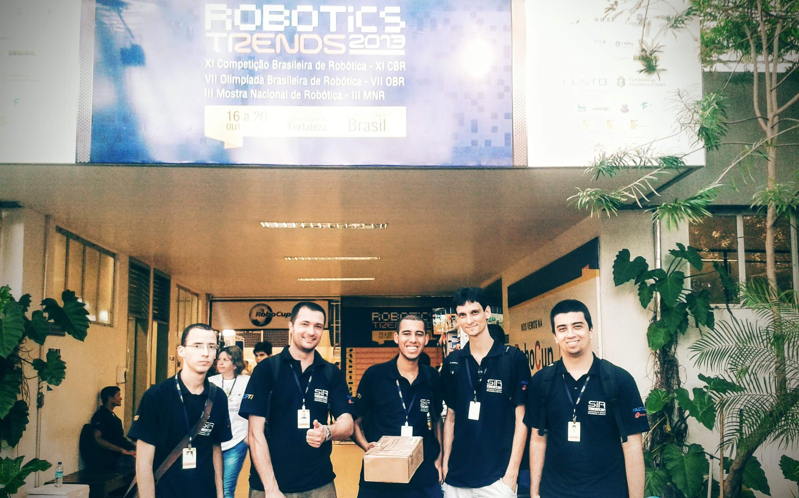

Primeira CBR - Início da SIRSoccer
Em outubro de 2013 o SIRLab teve a sua primeira participação em uma competição de Robótica com uma equipe formada por alunos de ensino superior da Faculdade de Educação Tecnológica do Estado do Rio de Janeiro - FAETERJ de Petrópolis (RJ).
Os alunos começaram a trabalhar em abril de 2013 na construção de uma plataforma de futebol de robôs para a categoria IEEE Very Small Size Soccer. O trabalho realizado em 2013 foi documentado em um artigo também chamado de Team Description Paper - TDP e submetido para a organização da Competição Brasileira de Robótica - CBR para avaliação. Após ser aceito o TDP os alunos e coordenadores do laboratório viajaram para Fortaleza (CE), onde a competição foi realizada no ginásio da UNIFOR ao longo de uma semana. Em sua primeira participação a equipe SIRSoccer (VSS) saiu da fase de grupos e chegou até as quartas de final.

Já a equipe do curso técnico do SIRLab conquistou em 2013 a primeira premiação do Laboratório. Em sua participação na etapa estadual do Rio de Janeiro da Olimpiada Brasileira de Robótica - OBR, a equipe conquistou o prêmio de robustês.